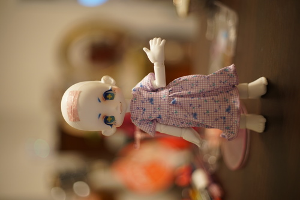
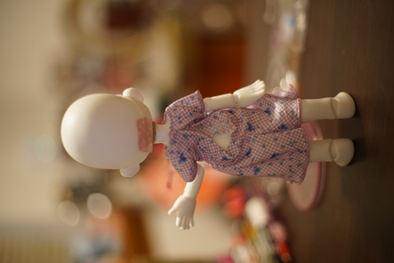
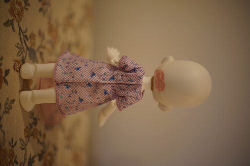
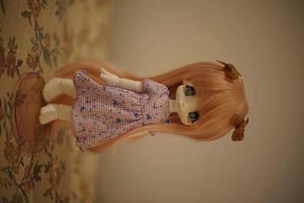
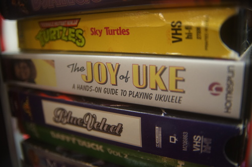
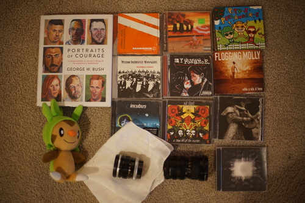

I was wandering in my 2nd favorite place (the clearance aisle) and I found this Barbie dress set for $1. Normally, barbie clothes are tailored for tits and curves so they're not worth even considering. This one wasn't? The fabric was cheap, but cute. The purple gingham has little blue flowers overlaid. It looked like it had a chance of fitting Praline, so I bought it.
It was attached to the packaging using the most tiny plastic clothes tags. They were scary to cut so close to the fabric, but honestly pretty cute!
 It almost did. The (unintentional) drop waist was not able to handle Kiki's huge hips. Nothing I can't solve right? I went to work with my seam ripper. I took out the velcro, removed the skirt, reattached the skirt about half an inch higher, topstitched, and reinstalled the velcro.
 It took a few hours and was all done by hand, but I think it's pretty cute! I actually do recommend this exact dress for anyone wanting to modify it for a Kiki. Tune in next time to see what kind of embellishments I add to it.
I went back to the record shop to test out the 35mm lens and had a successful trip even though I took too long. Sorry Ryan!
I've been using my Canon FD 50mm f/1.4 since early 2021 and I think it's a great lens. I've come to love it much more than the Sony 50mm f/1.8 and used is almost exclusively during that time. But I do feel like I'm ready to try another lens. I mentioned in the last blog that there was an Canon FL 35mm I wanted to try in my town, so I took my camera to the store.
I asked to see the 35mm lens and he had a lot of trouble getting it on my adapter. There's a little removable peg in my adapter that has to be removed before the lens fits on it. The owner finally got it on and the focus ring was super tight. He oiled it for me and distracted me by handing me another lens.
The other lens is a CIMKO MT-X 28-105mm f/3.5-4.9. Google turns up with almost nothing on this lens but a dead blog that just redirects. It says "JAPAN" and "MACRO" but not much else. It seems fun but it's got so many rings it's going to take me a bit to learn.
I ended up getting both lenses and 2 Incubus CDs for $50. The price on the 35mm was $55. I was originally planning to haggle him down to $40 for it, but that's not a good price for a lens with issues. I'm really glad I brought my camera to test it with. It's still a little tight in one direction but hopefully it'll loosen up more.
I have gripes with it. The removable peg in my adapter not only leaves a hole when removed, but also needs to be reinstalled every time my FD 50mm lens is used. It'll fit, but the aperture won't change. The CIMKO mystery lens does not need the peg.
I have been recently informed that this is not Grookey.
I was curious enough to buy this. It appears to be signed by 3 people who I assume are in the band.
For Ryan.
Ryan already had it but this one had a cooler case.
he didn't have a cap for one of the lenses...